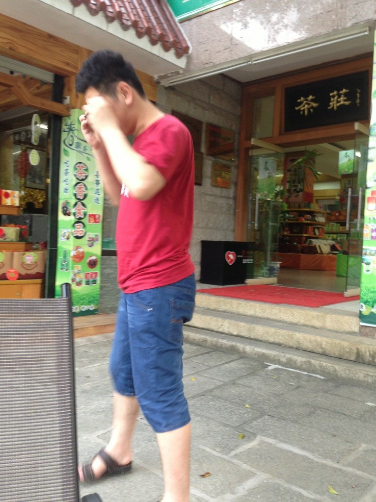

猜猜这是哪头神
首页
≮炫飞☆棋社≯
#1 猜猜这是哪头神 作者：冰雪笑醉 发表时间：2013-5-25 12:27:25

猜出来奖鲜花10枚！
#2 Re:猜猜这是哪头神 作者：趁晨陈尘沉 发表时间：2013-5-25 12:47:52
路过
#3 Re:猜猜这是哪头神 作者：超级天逸超人 发表时间：2013-5-25 13:02:43
简单老大咩
#4 Re:超级天逸超人【==Re:猜猜这是哪头神==】 作者：冰雪笑醉 发表时间：2013-5-25 13:10:26
恭喜小天逸，答错了
#5 Re:猜猜这是哪头神 作者：忧郁的双眼 发表时间：2013-5-25 15:19:45
宝宝会不会出题啊，连个范围都不给！
#6 Re:猜猜这是哪头神 作者：一期一会 发表时间：2013-5-25 22:07:01
王硕吧。。。。。。
#7 Re:一期一会【==Re:猜猜这是哪头神==】 作者：冰雪笑醉 发表时间：2013-5-25 22:11:49
狮子也答错了
#8 Re:猜猜这是哪头神 作者：黄药师 发表时间：2013-5-25 22:29:17
看鞋子，小天？
#9 Re:猜猜这是哪头神 作者：梧桐风 发表时间：2013-5-25 22:58:16
这也觉得是小天，不过发型好像变化挺大的。。。
#10 Re:猜猜这是哪头神 作者：鱼岛岛主 发表时间：2013-5-25 23:36:53
看着装确实像小天风格
#11 Re:猜猜这是哪头神 作者：小丸.net 发表时间：2013-5-26 10:30:14
小天没这么胖。。。。
#12 Re:猜猜这是哪头神 作者：冰雪笑醉 发表时间：2013-5-26 15:47:25
小天貌似不是 这种风格吧
#13 Re:猜猜这是哪头神 作者：天逸W西西 发表时间：2013-5-27 19:56:06
目测 不是我认识的人
#14 Re:猜猜这是哪头神 作者：三道 发表时间：2013-5-28 17:24:41
看建筑，看穿着，应该是在江苏南边，浙江，福建一带。看茶叶特产，应该是在苏南浙北。联系到楼主所在地，应该是在浙北。75%就是浙北的名人了。
#15 Re:三道【==Re:猜猜这是哪头神==】 作者：冰雪笑醉 发表时间：2013-5-30 17:24:52
三道分析的很有逻辑，可惜......
#16 Re:猜猜这是哪头神 作者：鱼岛岛主 发表时间：2013-5-30 23:13:24
以我看来 现在是给提示的时候 这样才能提起大家的兴趣否则此贴就…………
#17 Re:猜猜这是哪头神 作者：冰雪笑醉 发表时间：2013-5-30 23:34:55
好吧，此帅哥年芳30+.近视眼、喜欢绿色小说、以前比较瘦，近两年吨位膨胀！地区如三道的分析~
#18 Re:猜猜这是哪头神 作者：战神巴蒂 发表时间：2013-5-31 12:57:29
是不是董伟伟兄
#19 Re:猜猜这是哪头神 作者：冰雪笑醉 发表时间：2013-5-31 15:10:26
好吧，我在给点提示，此帅哥五子棋职业六段
#20 Re:猜猜这是哪头神 作者：九子禁手 发表时间：2013-6-1 21:27:38
会是殷大胖子吗？